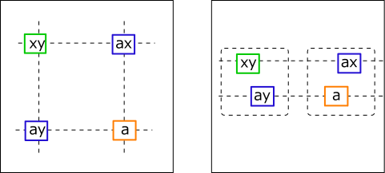
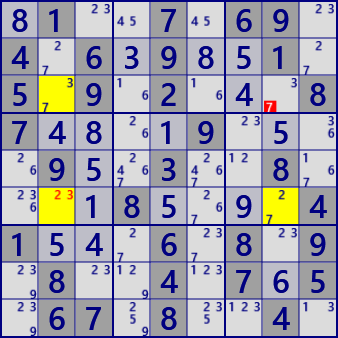
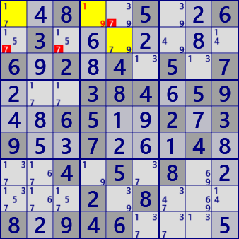
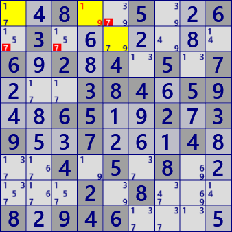

XY-Wing
XY-Wing is an analysis algorithm of Locked with a cell with two candidate numbers(bivalue cell).
When the three cells of the blue frame and the green frame are bivalue and weak links link each other,
the cell in the orange frame is not the number a.

The analysis algorithm is as follows.
- Create a list of bivalue cells.
- Select the cell to be the axis(Pivot cell) from the bivalue cell list.
- Create a list of bivalue weak links to connect to axis cells
- Choose 2 links from bivalue weak links list(combination selection).
(2-link is different in the other-end cell, and the number pair(ax and ay) is also different) - Find the influencing cell X at the other end of the 2 link.
(There is a common number(a) for the other end of 2 link and cell X)
Here is an example of XY-Wing.
 

.1..7.69.4.6.9..1.5.9.2...87....9....9..3..8....8....41...6.8.9.8..4.7.5.67.8..4.
6..1....7..18.73...2.3...9..5.9.8641.........1482.6.3..7...2.1...64.18..8....3..4
..8..5..6.3.......6.2.4.5.7...384.59..65..2.39..7...4...4.5.8.....2.8...8.946....
XY-Wing C# program
public partial class CellLinkGen: AnalyzerBaseV2{
public bool XYwing( ){
if(BVCellLst==null) BVCellLst = pBDL.FindAll(p=>(p.FreeBC==2)); //BV:bivalue
if(BVCellLst.Count<3) return false;
CeLKMan.PrepareCellLink(2); //weak Link
bool XYwing=false;
foreach( var P0 in BVCellLst ){
List<UCellLink> BVLKLst =CeLKMan.IEGetRcNoBTypB(P0.rc,0x1FF,2).Where(R=>R.BVFlag).ToList();
//foreach( var P in BVLKLst ) Console.WriteLine(P);
if(BVLKLst.Count<2) continue;
var cmb = new Combination(BVLKLst.Count,2);
int nxt=1;
while(cmb.Successor(nxt)){
UCellLink LKA=BVLKLst[cmb.Cmb[0]], LKB=BVLKLst[cmb.Cmb[1]];
UCell Q=LKA.UCe2, R=LKB.UCe2;
if( Q.rc==R.rc || LKA.no==LKB.no ) continue;
Bit81 Q81 = ConnectedCells[LKA.rc2]&ConnectedCells[LKB.rc2];
if(Q81.Count<=0) continue;
int noB = Q.FreeB.DifSet(1<<LKA.no) & R.FreeB.DifSet(1<<LKB.no);
if(noB<0) continue;
int no=noB.BitToNum();
string msg2="";
foreach( var A in Q81.IEGetUCeNoB(pBDL,noB) ){
if( A==P0 || A==Q || A==R ) continue;
A.CancelB=noB; XYwing=true;
if(SolInfoDsp) msg2+=" "+A.rc.ToRCString()+"(#"+(no+1)+")";
}
if( XYwing ){ //XYwing fond
.
. (Solution report code)
.
return true;
}
}
}
return false;
}
private string _XYwingResSub( UCell P ){
string st=P.rc.ToRCString()+"(#"+P.FreeB.ToBitString(9).Replace(".","")+")";
return st;
}
}